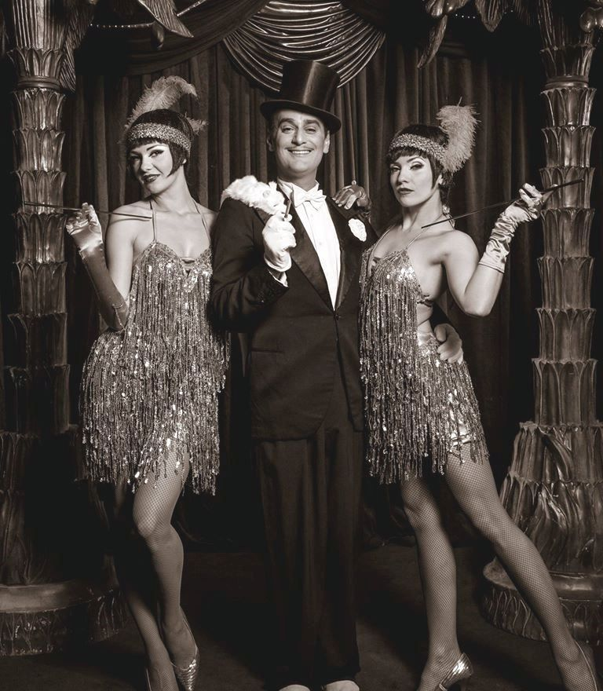

The 1920s - Les annees folles
https://www.history.com/topics/world-war-i/world-war-i-history The Années folles ("crazy years" in French) was the decade of the 1920s in France. It was coined to describe the rich social, artistic, and cultural collaborations of the period. The same period is also referred to as the Roaring Twenties or the Jazz Age in the United States.
This period of time emerged as a consequence to the end of World War I, a period of great tension that caused a wave of depression and agony to spread across Europe. The 1920s constitute an undeniable release of tension, a time of entertainment and fun.
"The parties were bigger, the pace was faster [...] the morals were looser and the liquor was cheaper."
- F. SCOTT FITZGERALD
While there were still struggles, it was a period of peace and easy going.